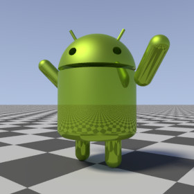

{kind=link}

A library module from the Persistence of Vision Ray Tracer (POV-Ray) Object Collection.
A 3-D model of Google’s Android™ robot.
The italicized nnnnnn in some of the file names represents the 6-digit number that is in the name of the .zip file.
| Key Files | |
|---|---|
| File | Description |
androidrobot.html |
The user manual (this document) |
androidrobot.inc |
The AndroidRobot software |
androidrobot.jpgandroidrobot_posed.jpg |
Sample output |
androidrobot.povandroidrobot_posed.pov |
Demo scene files |
READMEnnnnnn.html |
Important information about using the POV-Ray Object Collection |
| Other Files | |
| File | Description |
androidrobot.css |
A file used by the user manual |
androidrobot_description.txt |
A brief description of AndroidRobot |
androidrobot_keywords.txt |
A list of keywords |
androidrobot_prereqs.txt |
Prerequisites (empty file) |
androidrobot_thumbnail.png |
An illustration for the user manual |
cc-LGPL-a.png |
Administrative files |
Versionnnnnnn.js |
|
Note: The files androidrobot_cc-lgpl.png and droid.pov are not used in this version.
Requires POV-Ray version 3.5 or later.
All file names in this module and all global and local identifiers defined in spheresweep.inc comply fully with the Object Collection naming standards, as revised August 2008 and proposed August 2012. The prefix for this module is “androidrobot,” including any uppercase and lowercase variants; to avoid conflicts, do not declare identifiers in your scene file that start with this prefix plus an underscore.
assumed_gamma in global_settings{} prior to the next step.
#include "androidrobot.inc"Including the file more than once is harmless, though unnecessary.
An untextured robot. The robot faces the x-direction and the
bottom of the robot is at ANDROIDROBOT_V_BASE.
Use_merge:
yes, the robot will be composed using CSG merge.
If no, then CSG union will be used. In general, pass
yes if the object is to be transparent, no otherwise.
An untextured posable robot.

See file androidrobot_posed.pov for an example of how to use this.
Use_merge:
yes, the robot will be composed using CSG merge.
If no, then CSG union will be used. In general, pass
yes if the object is to be transparent, no otherwise.
x_Head:
x_Left_arm:
x_Right_arm:
x_Left_leg:
x_Right_leg:
This parameter may be #declared by the user prior to using the Macros.
| Parameter | Type | Description | Default |
|---|---|---|---|
AndroidRobot_Version |
float | A compatibility setting. For values 2.2 or greater, the arms will be separated from the torso (as in the 2-D logo). For values less than 2.2, the arms will be flush against the torso (as in previous versions of this module). | 2.2 |
| Identifier | Type | Description |
|---|---|---|
ANDROIDROBOT_V_BASE |
3-D vector | The location of the bottom of the unposed robot. |
ANDROIDROBOT_C_RAWCOLOR |
color | The official Android Web color #A4C639. Use this if:
|
ANDROIDROBOT_C_COLOR |
color | The gamma-adjusted official Android Web color. Use this if:
Warning: If you are using POV-Ray 3.62 or older, the gamma adjustment will be incorrect if |
Any identifiers in androidrobot.inc that are not documented in this manual are considered “private” or “protected,” and are subject to change or elimination in a future update.
| Version | Date | Notes |
|---|---|---|
| 1.0 | October 30, 2009 |
|
| 2.0 | July 23, 2011 |
|
| 2.1 | June 26, 2012 |
|
| 2.1a | June 28, 2012 |
|
| 2.2 | October 5, 2014 |
|
{kind=link}